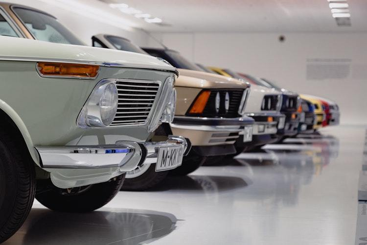
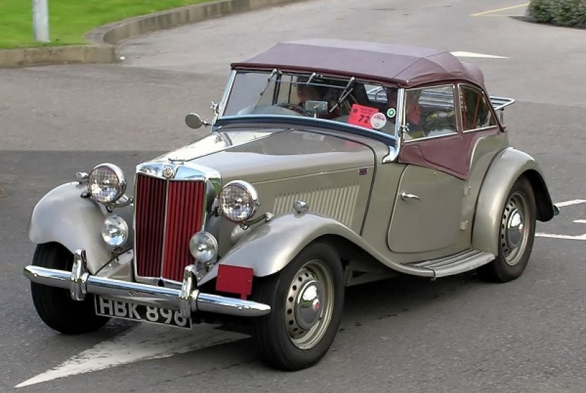

Anda perlu melakukan servis secara rutin pada mobil matic yang dimiliki.
Servis ini akan membuat mobil anda selalu update dan terawat. Saat servis rutin ini,
anda juga sangat perlu mengecek bagian oli atau pelumas mobil.
Salah satu hal paling penting dari mobil matic adalah transmisinya. Jika angka kilometer anda sudah berada di angka 50.000 km,
maka segeralah datang ke bengkel untuk mengganti oli transmisi mobil anda.
Cara merawat mobil matic yang cukup penting lainnya yaitu dengan memanaskan mobil saat sebelum dipergunakan.
Pemanasan ini juga perlu anda lakukan secara rutin dan berkala dan jangan lupa, saat memanaskan mobil matic, pastikan bahwa tuas transmisi di posisi netral.
Cara merawat mobil matic lainnya yaitu pastikan bahwa saat anda berkendara dan belum berhenti, jangan pernah gunakan persneling 'P' atau parking.
Akibatnya, persneling mobil matic anda dapat mengalami kerusakan. Sebaliknya, saat sedang parkir jangan keliru menggunakan persneling 'D' atau drive.
Layaknya mesin, mobil matic juga memerlukan uji kelayakan di jalanan. Uji kelayakan ini dapat anda lakukan dalam kurun waktu beberapa bulan sekali.
Caranya sangat mudah, yaitu mobil dijalankan dan memindahkan persneling secara bergantian.
Jika anda menemukan suara kebisingan pada mobil, segeralah pergi ke bengkel untuk mengecek bagian transmisi mobil.